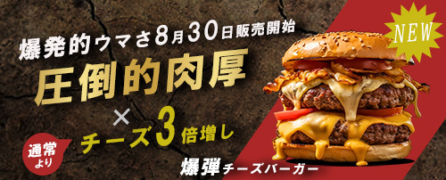

ハンバーガー バナー
仮想

- 概要
- 某ジャンクフード店が新作メニューをWEBサイト上で公開するバナー
- ターゲット
- 20～40代の男性。会社員
- 使用フォント
- ・「NEW」
→BIZ UD明朝・・・「HG創英角ゴシックUB 標準」が太く力強い印象であるのに対し、「BIZ UD明朝」は細身で洗練されたフォントのため、対比によってより強いインパクトを与えました
・「NEW」以外
→HG創英角ｺﾞｼｯｸUB標準・・・商品がボリュームのあるハンバーガーであるため、太さが均一な「HG創英角ゴシックUB 標準」を使用し、力強さと強調を表現しました - 情報設計・デザイン
- ・背景の壁紙のひび割れをモチーフに“爆発”を連想させることで、ハンバーガーの力強さとインパクトを演出しました
・ 男性をターゲットにしているため、ハンバーガーの写真を大きく配置し、「肉厚」という文字を金色でゴージャスに目立たせました。さらに、「チーズ3倍」など、思わずがっつきたくなるようなワードを加えることで、食欲を刺激するデザインにしました
- 制作日・期間
- 2025年9月20日 4時間
- 使用ツール
- Photoshop